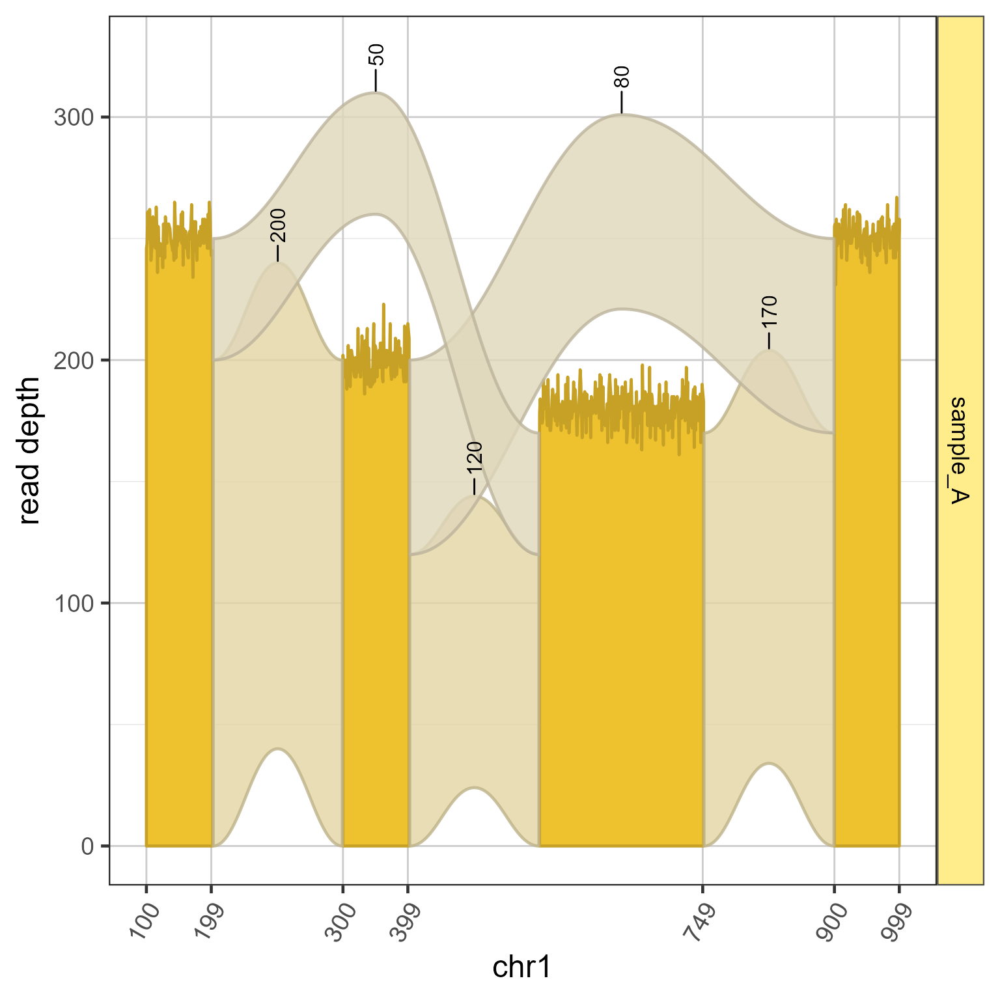

Prepare Sashimi plot data
Usage
prepareSashimi(
sjenv = NULL,
flatExonsByGene = NULL,
filesDF = NULL,
gene,
sample_id = NULL,
minJunctionScore = 10,
gapWidth = getOption("splicejam.gap", 200),
addGaps = TRUE,
baseline = 0,
compressGR = TRUE,
compress_introns = TRUE,
ref2c = NULL,
gap_feature_type = "intron",
default_feature_type = "exon",
feature_type_colname = "feature_type",
exon_label_type = c("none", "repel", "mark"),
junc_label_type = c("repel", "mark", "none"),
return_data = c("df", "ref2c"),
include_strand = c("both", "+", "-"),
junc_color = jamba::alpha2col("goldenrod3", 0.7),
junc_fill = jamba::alpha2col("goldenrod1", 0.4),
doStackJunctions = TRUE,
coord_method = c("coord", "scale", "none"),
scoreFactor = 1,
scoreArcFactor = 0.2,
scoreArcMinimum = 100,
covGR = NULL,
juncGR = NULL,
use_memoise = FALSE,
memoise_coverage_path = "coverage_memoise",
memoise_junction_path = "junctions_memoise",
do_shiny_progress = NULL,
verbose = FALSE,
...
)Arguments
- sjenv
environment(orlist) containing argument values indicated below. This input is intended to be compatible with output fromsashimiDataConstants(). It currently recognizes the following, although function arguments take priority when provided.'flatExonsByGene'
'ref2c' (optional)
'filesDF'
- flatExonsByGene
GRangesListnamed by gene, specifically named by 'gene_name' as in the 'tx2geneDF'data.frame.GRangeselements are disjoint, non-overlapping genomic ranges per gene and should represent only exon regions. All non-exon regions are assumed to be introns or gaps.- filesDF
data.framewith columns:url: any valid path compatible withdata.table::fread()sample_id:characterstring representing a biological sample, and often may be used for sample grouping, to combine coverage and/or junction read counts for all samples in the group.type:characterstring with 'bw' for bigwig coverage, 'junction' for BED12 splice junctions, or 'coverageGR' when coverage data are supplied asGRangesobjects named by 'sample_id', using argument 'covGR'.
- gene
characterstring of the gene to prepare, which must be present innames(flatExonsByGene).- sample_id
characterdefault NULL, used to subset entries in 'filesDF' to include only specific matching sample_id entries. When NULL, it uses all entries.- minJunctionScore
numericdefault 10, to require junctions to have at least this total score per sample_id to be displayed. This filter it useful to hide spurious junction counts which may only have very few supporting read counts, and is typically adjusted relative to the total coverage of the gene. For example, 'GAPDH' gene often has extremely high coverage, and may be associated with numerous spurious junctions with 10 to 50 reads, which are not useful to display when coverage is in the 10,000 order of magnitude.- gapWidth
integervalue, default 200 from optionsoptions('splicejam.gap'), to set a fixed gap width, or when NULL the gap width is defined as 3 times the median feature width.- addGaps
logicaldefault TRUE, whether to include gap regions in the coverage plot, for example including introns or intergenic regions. WhencompressGR=TRUEthen gaps regions are down-sampled using running maximum signal with roughly the same x-axis resolution as uncompressed regions.- baseline
numericvector named bynames(flatExonsByGene)where baseline is used to adjust the y-axis baseline position above or below zero. Default zero 0 for all practical purposes.- compressGR
logicaldefault TRUE, whether to compress GRanges coordinates in the output data, where gaps/introns are set to a fixed width. Whenref2cis not supplied, andcompressGR=TRUE, thenref2cis created usingmake_ref2compressed().- compress_introns
logicaldefault TRUE, whether to compress the coverage polygon coordinates to approximately the same number of pixels per inch as the exon polygons. This option greatly reduces the size of the polygon, since introns are already about 50 to 100 times wider than exons, and whencompressGRisTRUE, the introns are visibly compressed to a fixed width on the x-axis. The data has many more x-axis coordinates than the data visualization, this argument is intended to reduce the intron coordinates accordingly.- ref2c
listobject output frommake_ref2compressed()used to compress axis coordinates, to compress polygon coverage data in compressed regions, and to adjust splice junction arcs using compressed coordinates.- gap_feature_type
characterstring, default 'intron', with the feature_type representing gaps whenaddGaps=TRUE.- default_feature_type
characterstring, default 'exon' with the default feature_type representing non-gap regions.- feature_type_colname
characterstring with the column name ofvalues()to represent the feature type (exon/intron).- exon_label_type
characterstring indicating the type of label for exons:'none' (default): no exon label is displayed
'repel': use ggrepel to display the exon label
'mark': use
ggforce::geom_mark_rect()to display exon label
- junc_label_type
characterstring indicating the type of label for junction counts:'repel' (default): use ggrepel to display the exon label
'mark': use
ggforce::geom_mark_rect()to display exon label'none': no exon label is displayed
- return_data
characterstring, default 'df', with format of data to return: 'df' isdata.frameand 'ref2c' returns only the 'ref2c' axis compression aslist. Typically only 'df' is used.- include_strand
characterstring, default 'both' with strandedness of data to include. Coverage strandedness is determined by filename, assuming some substring which matches 'plus|pos|+' represents positive strand. By convention in splicejam, scores are negative for negative strand coverage, and negative strand junction counts, however not required."both": include coverage and junctions from both strands,"+": include coverage and junctions from only the '+' strand,"-": include coverage and junctions from only the '-' strand.
- junc_color, junc_fill
charactervalid R colors used for junction ribbon arcs. The alpha transparency is maintained, and when junctions are stacked, the actual color is slightly adjusted to vary from light to dark in order of stacked junction read counts. Default uses 'goldenrod3' border, and 'goldenrod1' for the fill color.- doStackJunctions
logicaldefault TRUE, whether to stack junction arcs at each end, this argument is passed togrl2df()which callsstackJunctions(). The purpose of stacking junctions is to place each ribbon junction arc starting above the previous ribbon arc, for each junction start, and junction end. In this way, the total height of junction ribbon widths should represent the total junction read count/score at each junction boundary.- coord_method
characterstring indicating how the x-axis coordinates are represented for use in ggplot2 plot functions.'coord' (default): stores coordinates unchanged, without regard to intron/gap compression. It allows the axis to be displayed using ggplot2 techniques, optionally using 'ref2c' to compress introns/gaps visually, keeping numeric values as-is.
'scale': stores numeric coordinates after compression when 'compressGR=TRUE', which means these values are not genome coordinates, instead are display coordinates. The ggplot2 axis labels are expected to be adjusted using 'ref2c' for display purposes.
'none': genome coordinates are stored as-is with no anticipated modifications by 'ref2c'. This approach is effectively equivalent to 'coord'.
- scoreFactor
numericdefault 1, scalar multiplied by each score, expected to be provided as namednumericvector named by 'sample_id'.- scoreArcFactor
numericdefault 0.2, used to adjust the magnitude of splice ribbon arc curvature. Use higher values to increase the height of the midpoint of the ribbon arc relative to each end of the ribbon. This value is a scalar, roughly applied as '1 + scoreArcFactor' such that 0.2 has the effect of 'score * 1.2', a 20% addition.- scoreArcMinimum
numericdefault 100, the minimum height of the midpoint of the junction ribbon arc above the flat mean value between the start and end of the ribbon. It is used as minimum, when thescoreArcFactorprovide too low a value. Useful when there may be intermediate coverage, or intervening exon, to have the arc curve above the coverage.- covGR
GRangesdefault NULL, optional coverage data in columns stored asNumericList, wherecolnames(GenomicRanges::values(covGR))are present in 'filesDF' for rows withfilesDF$type %in% "coverage_gr". The name should match 'url' or 'sample_id' in 'filesDF'.- juncGR
GRangesdefault NULL, optional splice junctions,'score'is used for the abundance of splice junction reads, and'sample_id'is used to define the biological sample as defined in 'filesDF'.- use_memoise
logicaldefault FALSE, passed togetGRcoverageFromBw()andimport_juncs_from_bed()as needed, indicating whether to use memoise to cache intermediate data results. Default is TRUE forlaunchSashimiApp()and FALSE otherwise. In general, TRUE would be a valid default option.- memoise_coverage_path, memoise_junction_path
characterstring with default folder path to store memoise cache files, used withuse_memoise=TRUE.- do_shiny_progress
default NULL uses
getOption("splicejam.progress", FALSE)which can be FALSE to show no progress, or afunctionwhich updates an existing progress bar, for example the output ofprogressr::progressor()is such a function.The default is NULL to avoid having this argument be conditional when also wrapping
prepareSashimi()as a memoise cached function. This argument remains NULL with or without enabling a progress bar, by setting the option to control the value.
- verbose
logicalwhether to print verbose output.- ...
additional arguments are passed to
make_ref2compressed(),getGRcoverageFromBw(),exoncov2polygon().
Value
list containing ggSashimi a ggplot2 graphical object
containing a full Sashimi plot; ggCov the RNA-seq coverage
subset of the Sashimi plot; ggJunc the splice junction
subsset of the Sashimi plot; ref2c the output of
make_ref2compressed() used for ggplot2 coordinate
visualization; covDF, juncDF data.frame objects
with the raw data used to create ggplot2 objects;
covGR, juncGR the GRanges objects used to create
the data.frames; gr the GRanges object representing the
exons for the gene of interest; juncLabelDF the data.frame
containing exon label coordinates used to add labels to
the splice junction arcs.
Details
This function is the workhorse function used to produce Sashimi plots, and is intended to be a convenient wrapper function for several other individual functions.
At a minimum, a Sashimi plot requires three things:
Exons, usually from a gene of interest.
RNA-seq coverage data.
Splice junction data.
There is some required pre-processing before running
prepareSashimi():
Prepare flattened exons by gene using
flattenExonsByGene()and corresponding data, includingexonsByGene,cdsByGene, andtx2geneDF. Verify the gene exon model data usinggene2gg().Find file paths, or web URLs, for a set of bigWig coverage files, representing RNA-seq coverage for each strand, for the samples of interest. Test the coverage data using
getGRcoverageFromBw()for a small set of GRanges data.Find file paths, or web URLs, for a set of BED6 or BED12 format files, note that it cannot currently use bigBed format due to limitations in the
rtracklayerpackage. Test the splice junction data usingrtracklayer::import()for a small range of GRanges features, then send the data tospliceGR2junctionDF()to prepare a data.frame summary.
The basic input for coverage and junction data is a data.frame,
which defines each file path or url, the type of data
"bw" or "junction", and the biological sample "sample_id".
Any file path compatible with rtracklayer::import() will
work, including web URLs and local files. When using a web URL
you may need to use "https://" format to force the use
of secure web requests, but this requirement varies by country.
See also
Other Sashimi prep functions:
exoncov2polygon(),
gene2gg(),
grl2df(),
make_ref2compressed(),
plotSashimi()
Examples
# The active example below uses sample data
suppressPackageStartupMessages(library(GenomicRanges));
data(test_exon_gr);
data(test_junc_gr);
data(test_cov_gr);
filesDF <- data.frame(url="sample_A",
type="coverage_gr",
sample_id="sample_A");
sh1 <- prepareSashimi(
flatExonsByGene=GRangesList(TestGene1=test_exon_gr),
filesDF=filesDF,
gene="TestGene1",
covGR=test_cov_gr,
juncGR=test_junc_gr);
plotSashimi(sh1);
